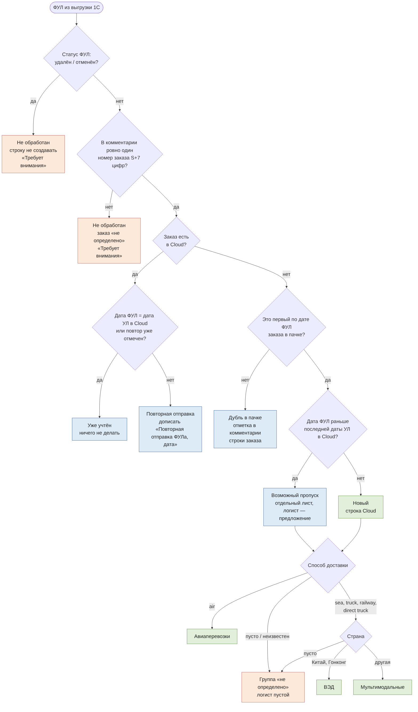
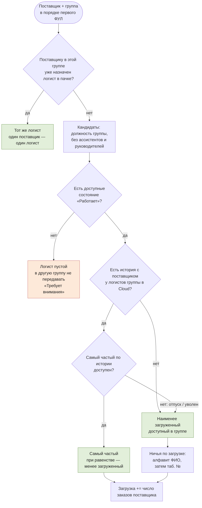
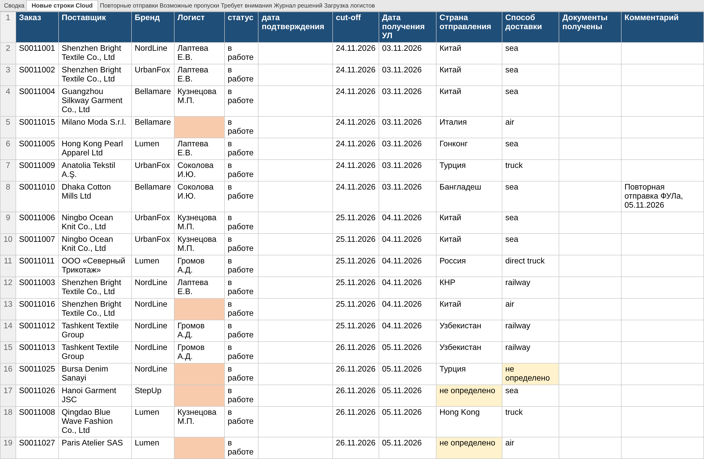
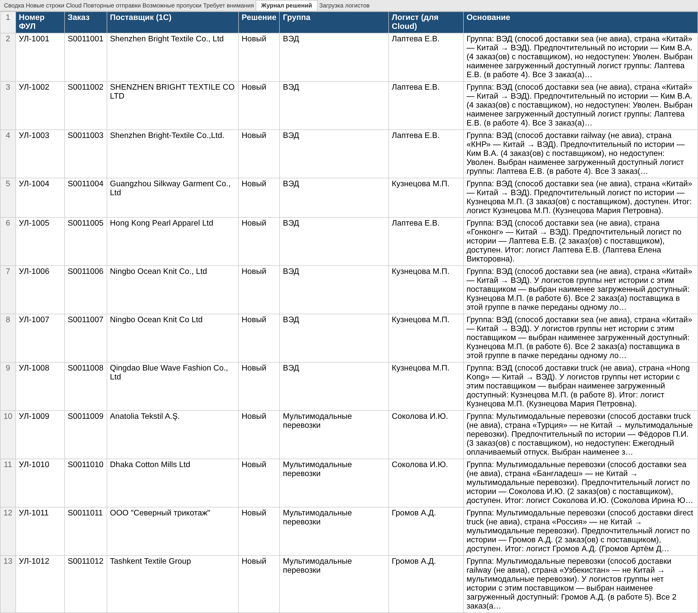
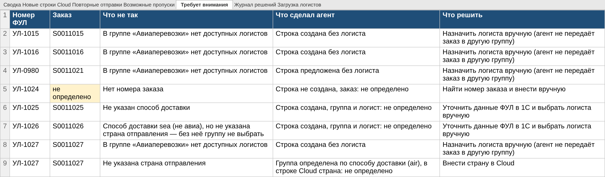
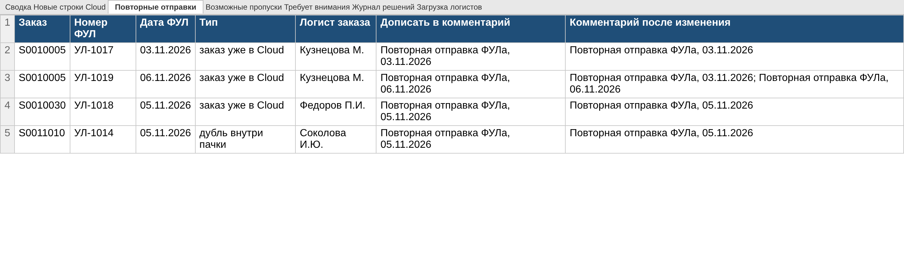

Сотрудник выбирает агента, прикладывает три выгрузки (ФУЛ из 1С, реестр Cloud, сотрудники из 1С) и отправляет пустое сообщение. Агент запускает навык ful-distribution. Его Python-скрипт находит файлы и колонки по заголовкам и применяет правила заказчика. Результат — Excel-файл: новые строки Cloud по форме реестра, повторные отправки, возможные пропуски, «Требует внимания», журнал решений с основанием по каждому ФУЛ и загрузка логистов. Модель только запускает скрипт и пересылает его готовый ответ. Группу и логиста определяет детерминированный скрипт, а не модель.
Что сдаётся:
GigaCowork_агент_ФУЛ.zip — навык ful-distribution.zip, system_prompt.txt и ИНСТРУКЦИЯ.md;Тестовые_данные_ФУЛ.zip — три набора по три Excel-файла, эталоны (.xlsx и .json), генератор, скрипт метрик и результаты прогонов;Инструмент и модель. Агент собран в формате GigaCowork и проверен в агентном рабочем пространстве с файлами и запуском Python (аналог harness из задания). Агентные прогоны выполняла лёгкая языковая модель тестового стенда: ей передавали только системный промпт, папку навыка и три файла, сообщение было пустым. Целевая модель для заказчика — GigaChat в GigaCowork. Навык не зависит от инструмента: SKILL.md с YAML-шапкой, скрипты на Python 3 (stdlib, openpyxl, xlrd), справочники в references/. Системный промпт — отдельный текст без привязки к платформе.
До ответа заказчика агент работает по допущениям из правой колонки. Все они вынесены в references/config.json и rules.md и меняются без переписывания логики.
| № | Вопрос | Кому | Зачем | Допущение до ответа |
|---|---|---|---|---|
| 1 | Какая дата пишется в «Повторная отправка ФУЛа, [дата]»: дата ФУЛ из 1С или дата обработки? | Сотрудник распределения | От этого зависят комментарий и проверка «повтор уже отмечен» | Дата ФУЛ из 1С (ДД.ММ.ГГГГ) |
| 2 | Выгрузка 1С за период содержит и уже перенесённые ФУЛ. Как отличить исходный ФУЛ от повторного? | Сотрудник распределения | Иначе каждый старый ФУЛ станет «повторной отправкой» | Дата ФУЛ = «Дата получения УЛ» в Cloud или отметка уже есть в комментарии → «Уже учтён», ничего не делать |
| 3 | «Один поставщик — один логист»: как быть, если у поставщика в пачке заказы разных групп (air и sea)? | Руководитель логистики | Логист air не может вести sea-заказ | Один логист на пару «поставщик + группа» |
| 4 | Как считать историю с поставщиком: все заказы или за период; «в работе» + confirm; логисты других групп? | Руководитель логистики | Определяет предпочтительного логиста | Все строки Cloud без ограничения срока, оба статуса, только логисты нужной группы |
| 5 | Если предпочтительный логист недоступен — брать второго по истории или наименее загруженного? | Руководитель логистики | В БТ сказано «наименее загруженного», но второй по истории может знать поставщика | Наименее загруженного доступного в группе (как в TO BE) |
| 6 | Как разрешать ничьи: равная история, равная загрузка? | Руководитель логистики | Без правила результат невоспроизводим | Равная история → менее загруженный из равных; равная загрузка → алфавит ФИО, затем таб. № |
| 7 | Учитывать ли в загрузке заказы, распределённые в этой же пачке? | Руководитель логистики | Иначе вся пачка уйдёт одному логисту | Да: «в работе» в Cloud + назначенные в пачке |
| 8 | Что делать с возможными пропусками: вносить, распределять, влияют ли они на загрузку? | Сотрудник распределения | БТ требует только показать их | Отдельный лист с предложенной строкой и логистом; в новые строки не входят и распределяются после новых |
| 9 | Какие состояния считаются «доступен»: больничный, командировка, отпуск с завтрашнего дня? Есть ли даты отпусков? | Руководитель логистики, HR / 1С | В выгрузке только текущее состояние | Доступен только «Работает», любое другое состояние — недоступен |
| 10 | Тайвань и Макао относятся к ВЭД («Китай»)? Внутрироссийские перевозки — мультимодальные? | Руководитель ВЭД / логистики | Граница группы ВЭД | Китай = Китай, КНР, Гонконг (и англ. варианты); остальное — мультимодальные |
| 11 | Неизвестный способ доставки (courier, express); пустая страна при air? | Сотрудник распределения | Ловушки с неполными данными | air → авиа без страны; неизвестный или пустой способ → группа «не определено», логист пустой |
| 12 | Какие статусы ФУЛ в 1С означают «не обрабатывать»? Что значит колонка «Логист» в выгрузке 1С? | Сотрудник распределения, администратор 1С | Колонки есть, правил нет | «Помечен на удаление», «Отменён», «Аннулирован» — не обрабатывать; «Логист» из 1С не используется, только отмечается в журнале |
| 13 | Какое написание поставщика и логиста записывать в Cloud? | Сотрудник распределения | Единообразие реестра, фильтры | Поставщик — как в Cloud (для нового — как в 1С); логист — «Фамилия И.О.» |
| 14 | «Пришёл раньше последней записи»: сравнивать по дате или по времени; что считать последней записью? | Сотрудник распределения | Граничный случай | Строго раньше максимальной «Даты получения УЛ» в Cloud, по дате |
| 15 | Какой статус у новой строки без логиста? | Сотрудник распределения | Влияет на будущий подсчёт загрузки | «в работе», логист пустой, строка в «Требует внимания» |


| Случай | Что делает агент | Пример в данных |
|---|---|---|
| Повторная отправка (заказ есть в Cloud) | Строку не создаёт; на листе «Повторные отправки» — текст «Повторная отправка ФУЛа, дата» и итоговый комментарий. Несколько повторов дописываются по порядку. Если поставщик расходится с Cloud — «Требует внимания» | A: УЛ-1017, 1019; C: УЛ-2016 |
| Повтор внутри пачки | Первый по дате ФУЛ даёт строку (даже если в файле стоит ниже), остальные — «Дубль в пачке», отметка в комментарии этой строки | A: УЛ-1014; C: УЛ-2015 |
| Исходный ФУЛ уже в Cloud | «Уже учтён», без действий | A: УЛ-0990; C: УЛ-1990 |
| Новый поставщик | Наименее загруженный доступный логист группы; все заказы поставщика — ему | A: УЛ-1006/1007 |
| Предпочтительный в отпуске / уволен | Не назначается; выбирается наименее загруженный доступный; в основании указаны причина и загрузка | A: УЛ-1009 / УЛ-1001 |
| Все сотрудники группы недоступны | Логист пустой (красная ячейка), в другую группу не передаётся, «Требует внимания». Ассистент и руководитель в состоянии «Работает» не назначаются | A: УЛ-1015; C: УЛ-2007 |
| Нет номера заказа / несколько номеров | Строка не создаётся, заказ «не определено», «Требует внимания» | A: УЛ-1024; C: УЛ-2008 |
| Нет способа доставки | Строка создаётся, способ и группа «не определено», логист пустой | A: УЛ-1025 |
| Нет страны | Не air → группа «не определено»; air → группа определена, логист назначается, страна «не определено» | A: УЛ-1026; C: УЛ-2001 |
| ФУЛ раньше последней записи Cloud | «Возможный пропуск»: в новые строки не входит, предложенная строка — на отдельном листе | A: УЛ-0975, 0980 |
файлы → для каждого листа найти строку заголовков (≤ 30 строк) по синонимам → тип: ФУЛ / Cloud / сотрудники
сотрудники: группа по должности; исключить ассистентов и руководителей; доступен ⇔ «Работает»
Cloud: имя логиста → ФИО (фамилия + совместимые инициалы; неоднозначно → не учитывать, вопрос)
загрузка[логист] = строки «в работе»; история[поставщик][логист] = все строки
для ФУЛ: отменён / нет или несколько номеров → Не обработан
по заказу (ФУЛ по дате): в Cloud → Уже учтён | Повторная отправка
не в Cloud → первый: Пропуск (дата < последней в Cloud) | Новый; остальные: Дубль
группа(способ, страна) → air | ВЭД | мульти | не определено
для пар (поставщик, группа) в порядке первого ФУЛ (сначала новые, затем пропуски):
кандидаты = доступные распределяющие сотрудники группы; нет → логист пуст
топ = самые частые по истории среди сотрудников группы
если в топе есть доступные → наименее загруженный из них, иначе → наименее загруженный в группе
ничья → алфавит ФИО, таб. №; загрузка += число заказов пары
вывод: Excel (7 листов) + JSON + текст ответа в stdout
Данные создаёт генератор generator.py. Все компании, бренды и сотрудники вымышленные. Эталон по каждому ФУЛ записан вручную в описании сценария (решение, группа, логист, комментарий, описание ловушки и что агент обязан сделать) и не вычисляется скриптом агента. Иначе проверка была бы замкнутой.
| Набор | ФУЛ | Cloud | Сотр. | Назначение |
|---|---|---|---|---|
| A_основной | 26 | 45 | 12 | Все обязательные ловушки из задания; вся группа авиаперевозок недоступна |
| B_формат | 26 | 45 | 12 | Данные A, но другой формат: колонки переставлены, лишние колонки, заголовок в 3-й строке, лист «Выгрузка 1С», первый лист реестра — «Инструкция», даты строкой, сотрудники в .xls, файлы export_1/2/3. Эталон по ФУЛ тот же, форма Cloud — в порядке колонок реестра B |
| C_крайние | 20 | 32 | 11 | Ничья в истории, тёзки «Белов И.»/«Белова И.», логист истории не из списка, кириллическая «С», два номера, «Помечен на удаление», «courier», Тайвань, дубль выше исходного, дата = последней в Cloud, нет поставщика / бренда / cut-off, логист в 1С |
| Требование задания | Где в данных (набор A, кроме отмеченных) |
|---|---|
| Все три группы | ВЭД: УЛ-1001…1008; мультимодальные: УЛ-1009…1013; авиа: УЛ-1015, 1016, 1027 |
| Повтор заказа из Cloud и повтор внутри пачки | УЛ-1017, 1018, 1019 (второй повтор); УЛ-1014 |
| Новый поставщик | УЛ-1006/1007 (Ningbo), УЛ-1008, УЛ-1012/1013 |
| Предпочтительный в отпуске и уволенный | УЛ-1009 (Фёдоров — отпуск), УЛ-1001…1003 (Ким — уволен) |
| Группа, где все недоступны | Авиаперевозки: уволена, два вида отпуска + руководитель «Работает»; C: ВЭД с ассистентом |
| Без номера заказа, способа доставки, страны | УЛ-1024, УЛ-1025, УЛ-1026 и УЛ-1027 (air) |
| Дата раньше последней записи Cloud | УЛ-0975, УЛ-0980; УЛ-0990 — старый, но уже учтённый |
| Поставщик записан по-разному | УЛ-1002 (регистр), УЛ-1003 (пробелы, дефис), УЛ-1011 (кавычки), УЛ-1018 (A.S./A.Ş.) |
| Короткие имена Cloud ↔ ФИО | «Кузнецова М.» при ассистенте Кузнецовой О.И.; «Федоров П.И.» (е/ё); «соколова и.ю.»; «Лаптева Е.» |
В каждой папке набора: входные_файлы/ (3 файла), Эталон.xlsx (по ФУЛ + эталонные строки Cloud + эталон пропусков) и эталон.json для автоматической сверки.
Скрипт evaluate.py запускает навык, читает получившийся Excel так, как его читал бы проверяющий, и сравнивает с эталоном. Чувствительность проверки подтверждена: со справочником, где Гонконг убран из «Китая», а ассистенты не исключены, полное совпадение падает до 62 %.
| Метрика (БТ) | Порог | A × 3 | B × 3 | C × 3 | Агент × 3 (A) |
|---|---|---|---|---|---|
| ФУЛ, совпавшие по всем полям | ≥ 95 % | 100 % | 100 % | 100 % | 100 % |
| Точность: решение / заказ / группа / логист / комментарий | ≥ 95 % | 100 % по каждому | 100 % | 100 % | 100 % |
| Форма Cloud: 12 колонок в порядке реестра, набор заказов, без старых и дублей, ячейки | 100 % прогонов | 3 / 3 | 3 / 3 | 3 / 3 | 3 / 3 |
| Возможные пропуски = эталону | — | да | да | да | да |
| Выдуманные значения на ловушках | 0 | 0 из 9 | 0 из 9 | 0 из 5 | 0 из 9 |
| Воспроизводимость (хеш содержимого) | одинаково | да | да | да | да, = прямому запуску |
| Назначения с обоснованием | 100 % | 14 / 14 | 14 / 14 | 11 / 11 | 14 / 14 |
| Полнота «Требует внимания» | — | 100 % | 100 % | 100 % | 100 % |
| Время ответа | ≤ 60 с | 0,24 с | 0,25 с | 0,25 с | 14,7–16,8 с |
Дополнительно проверено: если не приложен файл сотрудников, агент отвечает «ОШИБКА: не удалось найти: сотрудники из 1С…» (код 2) и ничего не распределяет; работают вход «одна книга + CSV в cp1251» и повторное вложение прошлого результата.
[пользователь] (текст пустой; приложено: Выгрузка_ФУЛ_1С.xlsx, Реестр_Cloud.xlsx, Сотрудники_1С.xlsx)
[агент] Read skills/ful-distribution/SKILL.md
[агент] Bash ls -la uploads outputs skills/ful-distribution
[агент] Bash python3 skills/ful-distribution/scripts/distribute.py \
--inputs uploads/Выгрузка_ФУЛ_1С.xlsx uploads/Реестр_Cloud.xlsx uploads/Сотрудники_1С.xlsx \
--out outputs → код 0, 0,25 с
[агент] Bash ls -la outputs → Распределение_ФУЛ_2026-11-06.xlsx, .json
[агент → пользователю, текст скрипта без изменений + файл]
Распределение пачки ФУЛ готово.
Обработано ФУЛ: 26
• Новых строк для Cloud: 18 (с логистом — 13, без логиста — 5)
• Повторных отправок: 4 (заказ уже в Cloud — 3, дубль внутри пачки — 1)
• Возможных пропусков: 2
• Требует внимания: 8 вопрос(ов) по 7 ФУЛ
• Уже учтены в Cloud, действий не нужно: 1
Файл: Распределение_ФУЛ_2026-11-06.xlsx
Главное, что нужно решить:
— ФУЛ УЛ-1015 (заказ S0011015): В группе «Авиаперевозки» нет доступных логистов. Назначить логиста вручную (агент не передаёт заказ в другую группу).
— ФУЛ УЛ-1016 (заказ S0011016): В группе «Авиаперевозки» нет доступных логистов. …
— ФУЛ УЛ-0980 (заказ S0011021): В группе «Авиаперевозки» нет доступных логистов. …
— ФУЛ УЛ-1024: Нет номера заказа. Найти номер заказа и внести вручную.
— ФУЛ УЛ-1025 (заказ S0011025): Не указан способ доставки. Уточнить данные ФУЛ в 1С и выбрать логиста вручную.
— ФУЛ УЛ-1026 (заказ S0011026): Способ доставки sea (не авиа), но не указана страна отправления — без неё группу не выбрать. …
— ФУЛ УЛ-1027 (заказ S0011027): В группе «Авиаперевозки» нет доступных логистов. …
— и ещё 1 — на листе «Требует внимания».
Агент ничего не записывал в Cloud и 1С: строки переносите после проверки. Основание по каждому ФУЛ — на листе «Журнал решений».




config.json и rules.md, добавить ответы в эталон и прогнать на обезличенной реальной пачке рядом с решениями сотрудника (метрики 7–8 БТ).evaluate.py) в библиотеку. Пример применения — агент подтверждения отклонений упаковочных листов с одним письмом менеджеру бренда.